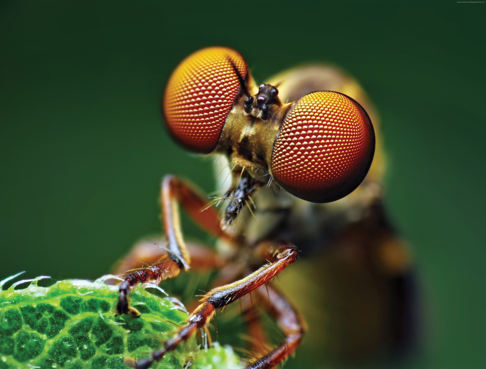

Os Insetos
Essa é a classe dos hexápodes ou dos insetos, como o próprio nome já diz, possuem três pares de patas ou totalizando seis. Temos exemplos das borboletas, besouros, pulgas, formigas e moscas.Possuem um par de antenas e sua grande maioria possui um ou dois pares de assas. Essas por sua vez, dão ainda mais locomoção, já que possibilitam o voo.
A maioria desses animais respira por traqueias que se abrem deixa a troca gasosa ocorrer, também respiram através dos poros do seu exoesqueleto. Uma curiosidade é que o tamanho do inseto depende da quantidade de oxigênio presente no ar, pois quanto maior a concentração do gás no ambiente, maior a capacidade de absorção feita pelo animal, sendo assim potencializando o crescimento.
Seu ciclo de vida é indireto pois possuem uma fase larval. O processo de transformação para o animal adulto é chamado de metamorfose. Existem dois tipos. O hemimetábolísmo que não realiza completamente a metamorfose. Quando saem do ovo, diferente do inseto adulto, passam por pequenas modificações conforme crescem. Esse é o caso dos gafanhotos e traças.
Já holometábolismo quando ocorre a metamorfose completa onde o ovo que eclode, a larva cresce e desenvolve uma bolsa ou cápsula envolta de si e começa um estágio de maturação e sai um animal adulto. Esse é o caso das borboletas e moscas.
Alguns insetos tem a sua visão é composta, ou seja, como se fosse pequenos olhinhos que formam um só, isso facilita em situações de perigo e de visão de voo.
Essa classe tem a maior quantidade de espécies dentro do reino animal. Tendo uma função ambiental importante, como a polinização das angiospermas, decomposição de matéria orgânica e alimento para outros animais.
Em uma questão econômica, quando existe um desequilíbrio ecológico a população desse insetos pode prejudicar as plantações, ou causando a mortalidade de seus predadores.
Alguns são herbívoros e outros carnívoros. E por curiosidade, alguns insetos a cor dos insetos é para camuflagem ou como um falso aviso da alerta quanto sua toxidade.